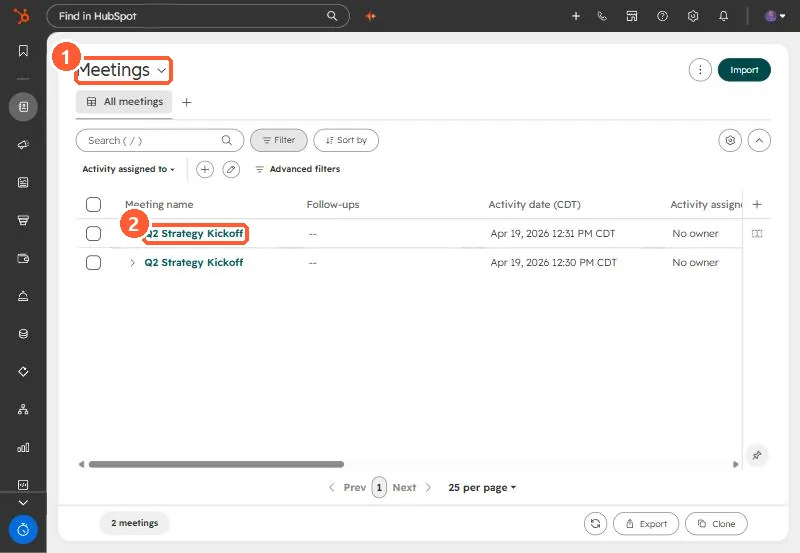
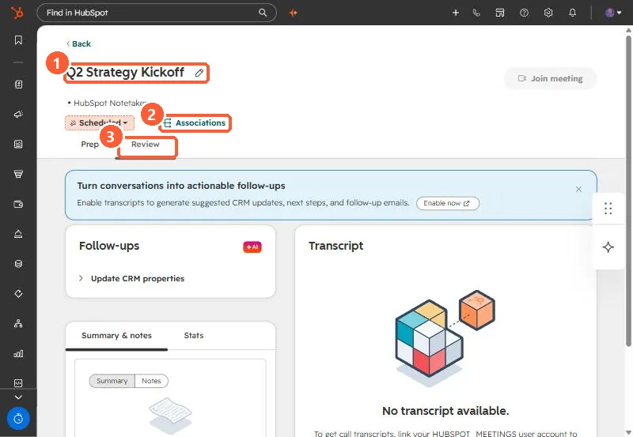

Short answer
Meetings are object type 0-47 and calls are 0-48. A meeting does not open at the record URL pattern contacts use (/contacts/{portalId}/record/0-47/{id}), which returned a 404 for me. Clicking a meeting on the Meetings index in my demo portal opens /schedule-workspace/{portalId}/review/0-47/{id}. Using 0-48 in that URL with a meeting ID loaded an empty call view.
1. What went wrong
While auditing recorded calls in an agency portal, I needed to send a link to one meeting. The record URL I built by hand, /contacts/{portalId}/record/0-47/{id}, returned a HubSpot 404 even though the meeting existed. A review link that used 0-48 redirected and loaded as a blank call, because 0-48 is the call object and the ID belonged to a meeting.
2. The pattern that works
Open the Meetings index and click a meeting. In my demo it opens:
https://app-na2.hubspot.com/schedule-workspace/242678301/review/0-47/365159278328Swap in your portal ID and meeting ID. Accounts on other data centers use their own host, such as app.hubspot.com.




3. Object IDs
The full list of type IDs is in HubSpot object type IDs. For links, the two to keep straight are 0-47 for meetings and 0-48 for calls.